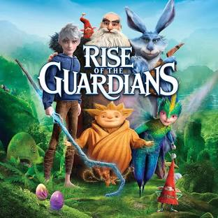

Rise of the Guardians (2012) is an animated adventure where childhood icons—Santa Claus, the Easter Bunny, Tooth Fairy, and Sandman—recruit a reluctant Jack Frost to stop Pitch Black (the Boogeyman) from drowning the world in fear. The story focuses on Jack finding his purpose, discovering his "center" (fun), and saving children's belief.F
| Character Name | Actor Name | Role |
|---|---|---|
| Jack Frost | Chris Pine | Spirit of Winter / Guardian of Fun |
| Pitch Black | Jude Law | The Boogeyman / The Nightmare King |
| Nicholas St. North | Alec Baldwin | Santa Claus / Leader of the Guardians / Guardian of Wonder |
Rise Of The Gaurdian was the first movie of my childhood.This was the only comfort zone of my life i still remember this movie like i have watched it yesterday. Those beautiful seen still in my mind.